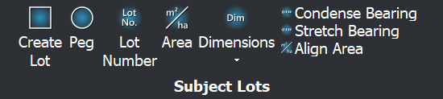
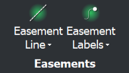
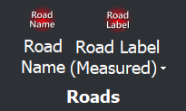
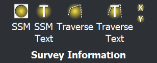
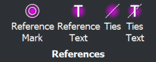
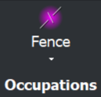
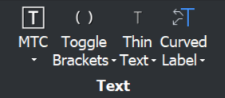
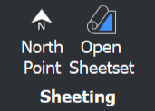
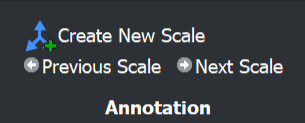

Using the Ribbon
The WSY Drafting tab is grouped by the kind of work you're doing. Here's what each panel is for.
Support
Help, and a link to this documentation.
Cadastre

Boundaries, lot numbers, areas, dimensions and bearings for the subject lots, plus the adjoining-lot equivalents, easements and roads. See Cadastre commands.


Survey

Pegs, reference marks, SSMs, ties and traverse lines. See Survey commands.

Occupations

Fence lines, fence ticks and walls.
Text

Text styles, leaders, and the label tools — brackets, background masks and curve-aligned text. See Text commands.
Sheeting

North points and sheet sets. See Sheeting commands.
Annotation

Creating annotation scales and stepping through them. See Annotation commands.
QA
Opens the project drawing checklist. See Drawing Checklist.